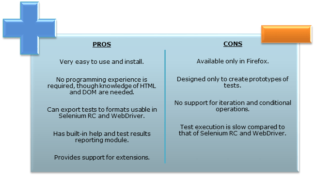
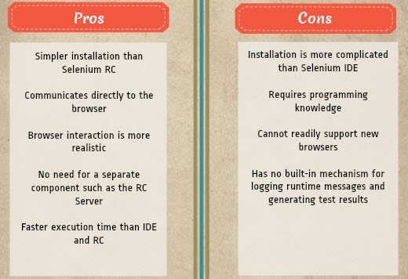

Selenium Introduction
What Is Selenium?
Selenium is a free (open source) automated testing suite for web applications across different browsers and platforms.It is quite similar to HP Quick Test Pro (QTP) only that Selenium focuses on automating web-based applications.
Four components
- Selenium Integrated Development Environment (IDE)
- Selenium Remote Control
- WebDriver
- Selenium Grid
Brief Introduction Selenium IDE
A Firefox add-on that you can only use in creating relatively simple test cases and test suites. It is the simplest framework in the Selenium suite and is the easiest one to learn.
Brief Introduction Selenium RC
Known as Selenium 1, which is the first Selenium tool that allowed users to use programming languages in creating complex tests.As of version 2.25.0, RC can support the following programming languages:
- Java
- C#
- PHP
- Python
- Perl
- Ruby
Brief Introduction WebDriver
The Newer breakthrough that allows your test scripts to communicate directly to the browser, thereby controlling it from the OS level. The WebDriver proves itself to be better than both Selenium IDE and Selenium RC in many aspects.
Selenium Grid
A tool that is used with Selenium RC to execute parallel tests across different browsers and operating systems.